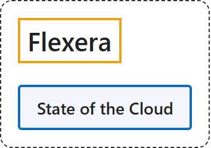

1. Flexera
Classification

Glossary
| Term | Definition | 中文翻译 | Source |
|---|---|---|---|
| Flexera Flexera |
"We are the industry leader in hybrid IT asset management (ITAM) and FinOps, with the numbers to back it up." | 我们是混合 IT 资产管理（ITAM）和 FinOps 领域的行业领导者，并有数据作证。 | Flexera, n.d., "The intelligence to make better decisions, the data to bring teams together" section, para. 1 |
| State of the Cloud 云现状报告 |
"The fifteenth annual Flexera 2026 State of the Cloud Report sheds light on the cloud computing trends, the pressures facing IT professionals and the strategic initiatives they're utilizing to remain competitive in today's dynamic and evolving landscape." | 第十五期年度 Flexera 2026 云现状报告揭示了云计算趋势、IT 专业人士面临的压力，以及他们为保持竞争力而采用的战略举措。 | Flexera, 2026a, "Overview" section, para. 1 |
Timeline
| Date | Report | Scope | Key figures | Source |
|---|---|---|---|---|
| 2026-03-18 | State of the Cloud, 2026 (15th edition) | "The Flexera 2026 State of the Cloud survey tapped 753 technical professionals and executive leaders worldwide in the winter of 2025." |
|
Flexera, 2026a, "Methodology" and "Key findings" sections; Flexera, 2026b, press release, paras. 1 and 3 |
| 2025-03-19 | State of the Cloud, 2025 (14th edition) | "polled more than 750 technical professionals and executive leaders worldwide who were involved in the use of cloud" |
|
Flexera, 2025, paras. 1, 2 and 4 |
| 2024-03-12 | State of the Cloud, 2024 (13th edition) | "The survey tapped 753 IT professionals and executive leaders worldwide, representing a broad cross-section of industries and context areas, in the winter of 2023." |
|
Flexera, 2024, "Among the highlights" list and closing methodology para. |
References
Flexera. (2024, March 12). Flexera 2024 State of the Cloud: Managing cloud spending is the top challenge of cloud computing, while AI, FinOps, security and sustainability demand attention [Press release]. https://www.flexera.com/about-us/press-center/flexera-2024-state-of-the-cloud-managing-spending-top-challenge
Flexera. (2025, March 19). New Flexera report finds that 84% of organizations struggle to manage cloud spend [Press release]. https://www.flexera.com/about-us/press-center/new-flexera-report-finds-84-percent-of-organizations-struggle-to-manage-cloud-spend
Flexera. (2026a). 2026 State of the Cloud report. https://info.flexera.com/CM-REPORT-State-of-the-Cloud
Flexera. (2026b, March 18). Flexera finds cloud value is rising while AI waste grows [Press release]. https://www.flexera.com/about-us/press-center/flexera-finds-cloud-value-is-rising-while-ai-waste-grows
Flexera. (n.d.). About us. Retrieved November 3, 2026, from https://www.flexera.com/about-us